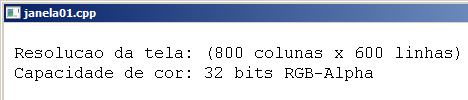

Curso completo de DarkGdk
Gameprog - Escola de programação de jogos digitais
Contato: gameprog.br@gmail.com
Fase 3.1
03.1 Configurações básicas de vídeo e janela
03.1 Visão geral
Neste capítulo vamos ver como realizar configurações básicas de vídeo e janela
tal como resolução de vídeo e alguns aspectos da janela como tamanho, posição
e título.
3.1.1 Resolução gráfica de vídeo
A configuração de resolução gráfica define sua qualidade de vídeo, por exemplo,
se a aplicação vai rodar em 800x600 ou 1024x768 lembrando que esses números
representam o total de colunas x linhas que multiplicados dão o total de pontos
ou pixels presentes na tela. Quantos mais pontos na tela, melhor é a definição
da sua imagem e em contrapartida há um maior gasto de memória.
3.1.2 Depth ou profundidade de cor
A profundidade de cor define a quantidade máxima de cores que a configuração
gráfica do vídeo ou de uma imagem podem gerar e suportar. Por exemplo, uma
configuração de 8 bits produz apenas 256 cores; 24bits produz 16 milhões de
cores e a de 32bits produz 16 milhões de cores com suporte a efeito de
transparências.
3.1.3 Janela ou tela cheia?
Outra opção que poderá ser feita é se sua aplicação rodará nativamente em tela
cheia (fullScreen), isto é, ela terá todo o tamanho do vídeo à sua disposição
não tendo que dividir espaço com nenhuma outra aplicação.
Se sua aplicação consistir de uma janela você poderá definir o tamanho, posição
e título da janela além das fontes como já vimos antes.
Configurando o modo de vídeo e a janela da aplicação

// janela01.cpp
// Esse programa ilustra configuração da janela
#include "DarkGDK.h"
void initsys();
void tst_janela01();
int nPreto = 0;
int nAzul = 0x0000FF;
int nBranco = 0xFFFFFF;
------------------------------------------------------------------------------
void DarkGDK ( void ) {
// Começo da aplicação DarkGdk
initsys();
tst_janela01();
while ( LoopGDK ( ) ) {
dbSync ( );
} // fim do while
return;
} // fim da função: DarkGDK
------------------------------------------------------------------------------
void initsys() {
// Esta função inicializa o sistema
dbSyncOn( ); dbSyncRate (60);
} // fim da função: initsys()
------------------------------------------------------------------------------
void tst_janela01 () {
// Esta função demonstra as principais funções de janela
char txt[255];
int nLargura, nAltura, nProfundidade;
dbSetWindowOn(); // Definindo modo janela
dbSetDisplayMode(800,600,32); // Definindo o modo de vídeo
dbCLS(nBranco);
dbInk(nPreto, nBranco);
// Configurando a janela
dbSetWindowTitle("janela01.cpp");
dbSetWindowSize (800,600);
dbSetWindowPosition (320,20);
// Obtendo a configuração de vídeo
nLargura = dbScreenWidth();
nAltura = dbScreenHeight();
nProfundidade = dbScreenDepth();
// Configurando a fonte
dbSetTextFont ("Courier New");
dbSetTextSize(20);
// Exibindo a configuração de vídeo
dbPrint();
sprintf(txt, " Resolucao da tela: (%d colunas x %d linhas)", nLargura, nAltura);
dbPrint(txt);
sprintf(txt, " Capacidade de cor: %d bits RGB-Alpha", nProfundidade);
dbPrint(txt);
} // fim tst_janela01()
Obtendo a configuração de vídeo
Com as funções abaixo você obtém a configuração corrente de vídeo. Todas elas
retornam um valor do tipo int.
nLargura = dbScreenWidth();
Esta função retorna a quantidade total de colunas da configuração de vídeo
corrente.
nAltura = dbScreenHeight();
Esta função retorna a quantidade total de linhas da configuração de vídeo
corrente.
nProfundidade = dbScreenDepth();
Esta função retorna a profundidade de cor da configuração de vídeo corrente.
Definindo janela ou tela cheia
As duas funções abaixo não tem argumentos de entrada nem de saída. Elas ligam
ou desligam o modo janela, definindo ou não tela cheia.
dbSetWindowOff()
Essa função estabelece o modo de tela cheia suprimindo a janela.
dbSetWindowOn()
Liga o modo janela.
Configurando a janela
As funções abaixo configuram a janela definindo tamanho, posição e título.
// Configurando a janela
dbSetWindowTitle("janela01.cpp");
dbSetWindowSize (800,600);
dbSetWindowPosition (320,20);
Definindo a resolução de vídeo e a profundidade de cor
A função abaixo define a resolução e a profundidade da configuração de vídeo.
dbSetDisplayMode(nLargura,nAltura,nProfundidade);
dbSetDisplayMode(800,600,32);